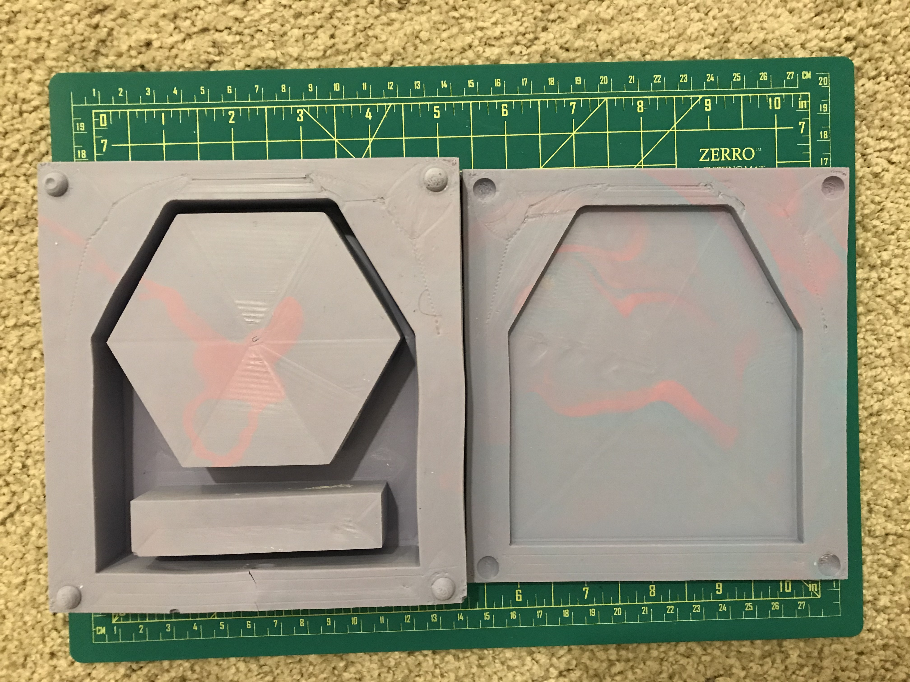

For this assignment we were tasked to design and fabricate a 2-part silicon mold, then use that to cast identical items in plaster.
Picking up from where I left off last week, I had to change some aspects of my design to place the candle lid while using the candle.
After completing the design (3dm file), I created a .3x print. I used that to decided how the two pieces will be divided, designed and placed the halves into the mold boxes, and created opposite keys for each half. I continued by printing the parts (top piece: ~11 hours, bottom piece: ~ 6.5 hours). Here's a linked to the 3dm, .stl, and gcode files!
Then, I mixed my Oomoo and poured it into the models. After 6 hours I had two good looking molds ready to be casted.

I began casting the next morning, by mixing plaster with water.
Since I had left the two mold pieces on top if each other, they were very well stuck and I was able to use electrical tape to wrap them in place. I was then able to use my 3D printers shipping box as my casting workstation!
However, I was only able to create a good replicate once due to:
1. Large footprint of my model with respect to how much plaster I had.
2. Position of the spruce. Ideally It would’ve placed it on the bottom piece and sanded any over-during artifacts easily.
3. Skimping on plaster usage in round 2 & 3.